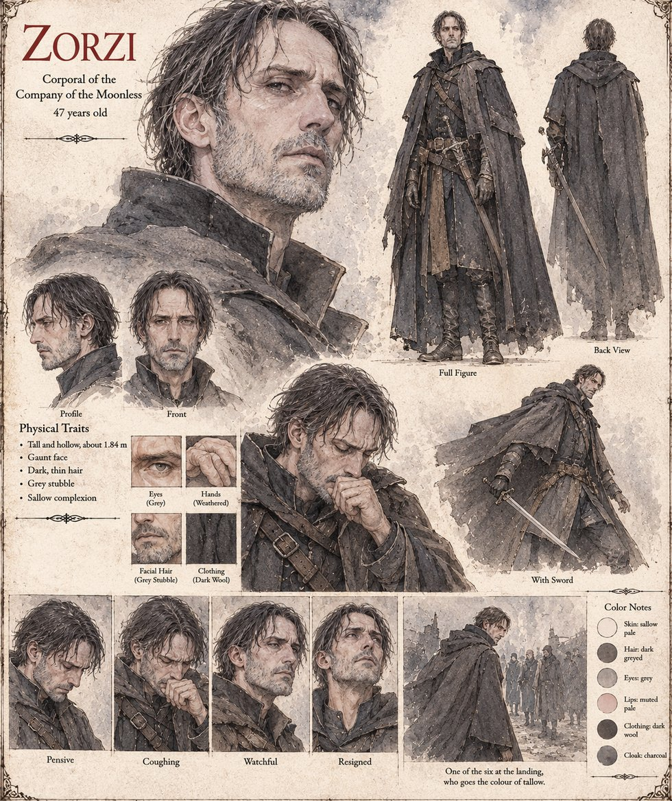

Zorzi
Corporal of the Company of the Moonless · one of the six sent to the landing · 47 on the sheet
He is a tall, hollow man called Zorzi who coughed, the corporal of the six hard men whom Captain Corbelli sends to Focolare’s own landing to see whether the grain the Council keeps hearing about is real. Bortolo rows them up at dusk in a flat black skiff, six men in dark wool sitting very upright and saying nothing. At the fence they stop in a loose half-circle, each a pace from the next, each with his back to something and a hand hanging a little open at his side, under Sergeant Piovesan. When the hollow replays an old man’s voice for thirteen seconds, Menego’s, The corporal had gone the color of tallow. In the skiff going back he coughs, and nobody speaks for the better part of an hour.
The manuscript gives his tallness, his hollowness and his cough, and no age, face, hair or eye colour. The sheet’s age of 47, build of about 1.84 m, gaunt face, thin dark hair, grey stubble, sallow skin, grey eyes, dark wool clothing and charcoal cloak are its own, as are its panels Pensive, Coughing, Watchful and Resigned, its view With Sword, with the blade drawn, and its portrait with a fist to his mouth. Its scene One of the six at the landing, who goes the colour of tallow. condenses the manuscript, which puts him at the fence and not the landing when he goes pale, and draws him cloaked among soldiers on a street.
“a tall, hollow man called Zorzi who coughed”